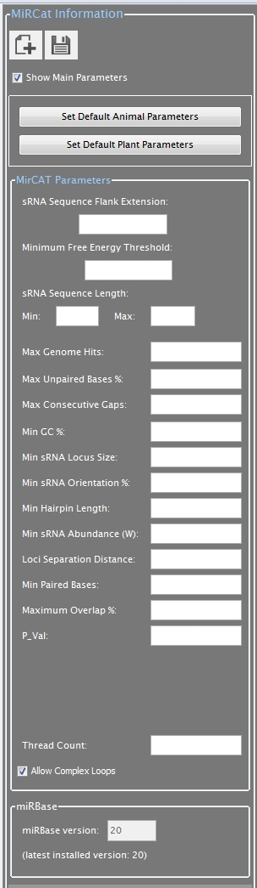
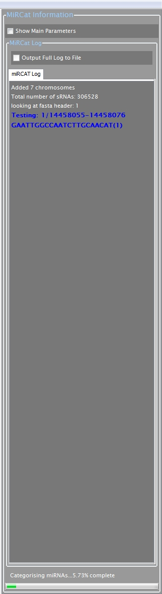

Parameter Browser
The sRNA Workbench Parameter browser is a window used to display large sets of parameters that can be used to display certain variables that control the current top-most tool.
The images below show two examples of uses of the parameter browser in the miRCat tool.

The above image shows the miRCat parameter browser with all the available parameters visible.

This image shows the miRCat parameter browser with all the available parameters hidden and the current log information visible. A user can from here determine the total progress of miRCat over the entire entered data set along with additional information. For more information please refer to the miRCat pages.